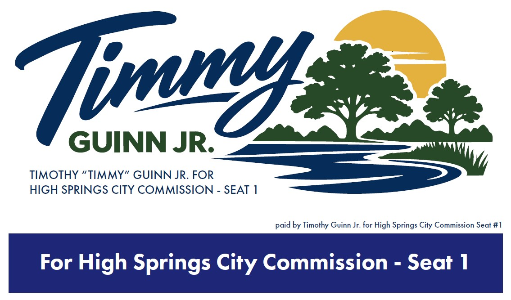

MY GOALS
FOR HIGH
SPRINGS
- Effective governance requires mutual respect. I am committed to bringing a strict standard of decorum to the dais and to my daily life. We can vigorously debate the best solutions for High Springs without degrading our neighbors or dividing our city. A unified commission gets things done; a divided one just makes noise.
- Increasing revenue by incentivizing businesses the community wants and need in order to try and meet our budgetary constraints.
- We aren't just managing a budget; we are building a hometown. Every decision we make on the commission should pass one simple test: Does this make High Springs a place where our children will want to raise their own kids?
